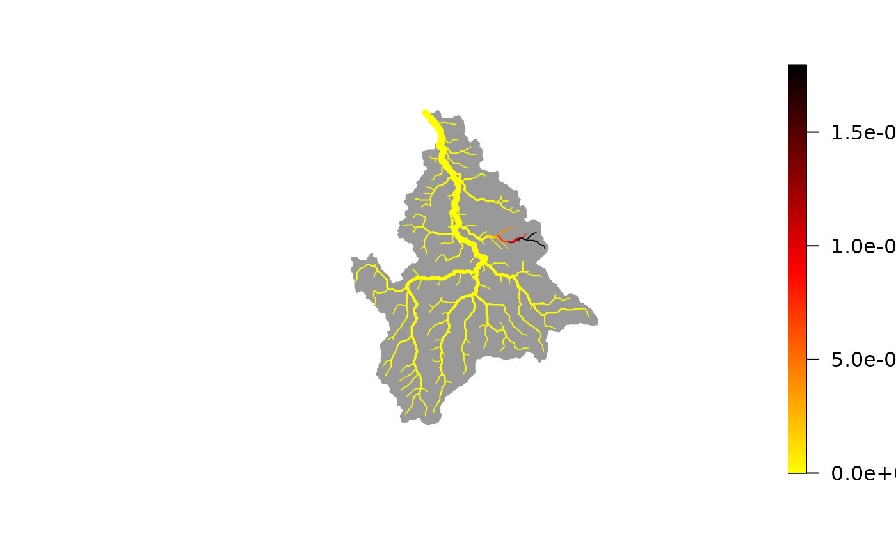
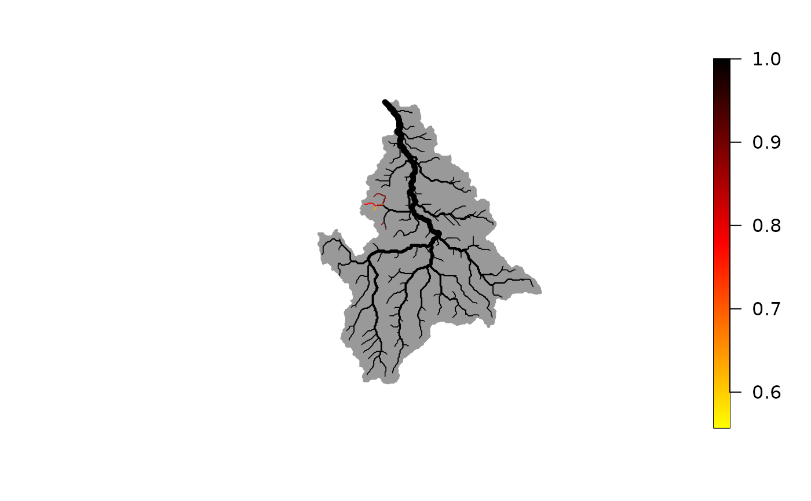

Optimize eDITH
run_eDITH_optim.RdFunction that performs search of optimal parameters of an eDITH model
Usage
run_eDITH_optim(data, river, covariates = NULL, Z.normalize = TRUE,
use.AEM = FALSE, n.AEM = NULL, par.AEM = NULL,
no.det = FALSE, ll.type = "norm", source.area = "AG",
likelihood = NULL, sampler = NULL, n.attempts = 100,
par.optim = NULL,
tau.prior = list(spec="lnorm",a=0,b=Inf,
meanlog=log(5), sd=sqrt(log(5)-log(4))),
log_p0.prior = list(spec="unif",min=-20, max=0),
beta.prior = list(spec="norm",sd=1),
sigma.prior = list(spec="unif",min=0, max=1*max(data$values, na.rm = TRUE)),
omega.prior = list(spec="unif",min=1, max=10*max(data$values, na.rm = TRUE)),
Cstar.prior = list(spec="unif",min=0, max=1*max(data$values, na.rm = TRUE)),
verbose = FALSE)Arguments
- data
eDNA data. Data frame containing columns
ID(index of the AG node/reach where the eDNA sample was taken) andvalues(value of the eDNA measurement, expressed as concentration or number of reads).- river
A
riverobject generated viaaggregate_river.- covariates
Data frame containing covariate values for all
riverreaches. IfNULL(default option), production rates are estimated via AEMs.- Z.normalize
Logical. Should covariates be Z-normalized?
- use.AEM
Logical. Should eigenvectors based on AEMs be used as covariates? If
covariates = NULL, it is set toTRUE. IfTRUEandcovariatesare provided, AEM eigenvectors are appended to thecovariatesdata frame.- n.AEM
Number of AEM eigenvectors (sorted by the decreasing respective eigenvalue) to be used as covariates. If
par.AEM$moranI = TRUE, this parameter is not used. Instead, the eigenvectors with significantly positive spatial autocorrelation are used as AEM covariates.- par.AEM
List of additional parameters that are passed to
river_to_AEMfor calculation of AEMs. In particular,par.AEM$moranI = TRUEimposes the use of AEM covariates with significantly positive spatial autocorrelation based on Moran's I statistic.- no.det
Logical. Should a probability of non-detection be included in the model?
- ll.type
Character. String defining the error distribution used in the log-likelihood formulation. Allowed values are
norm(for normal distribution),lnorm(for lognormal distribution),nbinom(for negative binomial distribution) andgeom(for geometric distribution). The two latter choices are suited when eDNA data are expressed as read numbers, whilenormandlnormare better suited to eDNA concentrations.- source.area
Defines the extent of the source area of a node. Possible values are
"AG"(if the source area is the reach surface, i.e. length*width),"SC"(if the source area is the subcatchment area), or, alternatively, a vector with lengthriver$AG$nodes.- likelihood
Likelihood function. If not specified, it is generated based on arguments
no.detandll.type.- sampler
Function generating sets of initial parameter values for the optimization algorithm. If
NULL, initial parameter values are drawn from the default prior distributions ofrun_eDITH_BT. See details.- n.attempts
Number of times the optimizing function
optimis executed. Each time,sampleris used to draw an initial parameter set.- par.optim
List of parameters to be passed to
optim. By default, the likelihood is maximized (i.e.,control$fnscale = -1), and the maximum number of iterations is set to 1e6. The default optimization method is "Nelder-Mead" (same default as inoptim).- tau.prior, log_p0.prior,beta.prior,sigma.prior,omega.prior,Cstar.prior
Prior distribution for the relevant parameters of the eDITH model.
- verbose
Logical. Should console output be displayed?
Details
This function attempts to maximize the log-posterior (sum of log-likelihood and log-prior) via the
non-linear optimization function optim.
If specified by the user, sampler must be a function that produces as output a "named num"
vector of parameters. Parameter names must be same as in the likelihood. See example.
By default, AEMs are computed without attributing weights to the edges of the river network.
Use e.g. par.AEM = list(weight = "gravity") to attribute weights.
Value
A list with objects:
- p
Vector of best-fit eDNA production rates corresponding to the optimum parameter estimates
param. It has length equal toriver$AG$nNodes.- C
Vector of best-fit eDNA values (in the same unit as
data$values, i.e. concentrations or read numbers) corresponding to the optimum parameter estimatesparam. It has length equal toriver$AG$nNodes.- probDet
Vector of best-fit detection probabilities corresponding to the optimum parameter estimate
param_map. It has length equal toriver$AG$nNodes. If a customlikelihoodis provided, this is a vector of null length (in which case the user should calculate the probability of detection independently, based on the chosen likelihood).- param
Vector of named parameters corresponding to the best-fit estimate.
- covariates
Data frame containing input covariate values (possibly Z-normalized).
- source.area
Vector of source area values.
- out_optim
List as provided by
optim. Only the result of the call tooptim(out ofn.attempts) yielding the highest likelihood is exported.- attempts.stats
List containing relevant output for the different optimization attempts. It contains
lp(vector of maximized log-posterior values for each single attempt),counts(total function evaluations),conv(convergence flags as produced byoptim), andtau(best-fit decay time values in h).
Moreover, arguments ll.type (possibly changed to "custom" if a custom likelihood is specified), no.det
and data are added to the list.
Examples
data(wigger)
data(dataC)
data(dataRead)
## fit eDNA concentration data - use AEMs as covariates
set.seed(9)
out <- run_eDITH_optim(dataC, wigger, n.AEM = 10,
n.attempts = 1) # reduced n.AEM, n.attempts for illustrative purposes
# it is recommended to attempt optimization several times to ensure convergence
# \donttest{
library(rivnet)
# best-fit map of eDNA production rates
plot(wigger, out$p)

# best-fit map of detection probability
plot(wigger, out$probDet)

# compare best-fit vs observed eDNA concentrations
plot(out$C[dataC$ID], dataC$values,
xlab = "Modelled concentrations", ylab = "Observed concentrations")
abline(a=0, b=1)
## fit eDNA read number data - use AEMs as covariates
set.seed(5)
out <- run_eDITH_optim(dataRead, wigger, ll.type = "nbinom",
par.AEM = list(weight = "gravity"),
n.attempts = 1) # reduced n.attempts for illustrative purposes
## use user-defined covariates
covariates <- data.frame(urban = wigger$SC$locCov$landcover_1,
agriculture = wigger$SC$locCov$landcover_2,
forest = wigger$SC$locCov$landcover_3,
elev = wigger$AG$Z,
log_drainageArea = log(wigger$AG$A))
set.seed(2)
out.cov <- run_eDITH_optim(dataC, wigger, covariates, n.attempts = 1)
# reduced n.attempts for illustrative purposes
# use user-defined covariates and AEMs
set.seed(1)
out.covAEM <- run_eDITH_optim(dataC, wigger, covariates, use.AEM = TRUE,
par.AEM = list(weight = "gravity"),
n.attempts = 1) # reduced n.attempts for illustrative purposes
# use AEMs with significantly positive spatial autocorrelation
set.seed(1)
out.AEM.moran <- run_eDITH_optim(dataC, wigger, use.AEM = TRUE,
par.AEM = list(weight = "gravity", moranI = TRUE),
n.attempts = 1) # reduced n.attempts for illustrative purposes
# define sampler function when the first 10 AEMs are used as covariates
samp_fun <- function(n){ # input argument needed but not used
mins = c(0, -20, rep(-5,10), 0)
maxs = c(10, 0, rep(5,10), 5e-12)
nams = c("tau", "log_p0", paste0("beta_AEM",1:10), "sigma")
vec <- runif(numeric(13), min=mins, max=maxs)
names(vec) <- nams
return(vec)}
set.seed(1)
out.samp <- run_eDITH_optim(dataC, wigger, n.AEM = 10,
sampler = samp_fun,
n.attempts = 1) # reduced n.attempts for illustrative purposes
# }